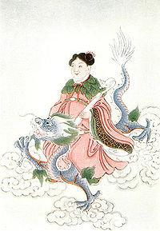
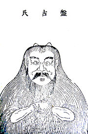
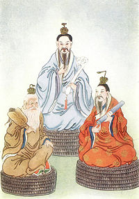
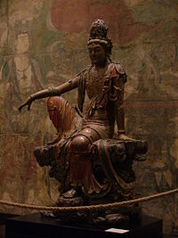
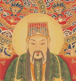
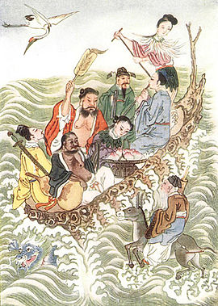

Çin mitolojisi
- Çin mitolojisi, Çin halk ve kültürünün biriktirdiği mitolojik ve efsanevi söylence, inanç ve tarih anlayışın bütününü tanımlar. Oxford'un Asya Mitolojisi Sözlüğü (A Dictionary of Asian Mythology) Çin mitolojisini tanımlarken şu ifadeye yer verir:
Çin mitolojisi, ..., tarih, efsane ve mitin bir karışımıdır.
- Tarihçiler Çin mitolojisinin MÖ 12. yüzyıl sıralarında oluşmaya başladığını varsaymaktadır. Çin mitolojisinin en önemli kısmı ise yazılı dönemde, daha sonraları ortaya çıkmıştır. Çin mitolojisi, yaratılış mitleri, halk söylenceleri ile folklorik öğeler, tarihi olaylarla karışmış bir mit yapısı, efsanevi, tanrısal krallar barındıran kral listesi ile göze çarpar.
Çin mitolojik öğeleri nelerdir
Ejderha; İyiyi temsil eder
Fei Lian; Rüzgarların hükümdarı (Boğa kafasına sahip yılan kuyruklu)
Mitin Çin kültüründeki konumu ve Çin miti
- Çin mitolojisine dair yapılan çağdaş sayılabilecek ilk araştırmalar sonucu oluşan genel kanı Çin kültürünün diğer kültürlerdekinden daha farklı bir şekilde çok az oranda ve etkin olmayan bir mitoloji barındırdığına yönelikti. Buna gösterilen en büyük kanıt Çin mitlerine dair atıfların antik Çin metinlerinde genellikle oldukça parçalanmış bir şekilde bulunmasıydı. Bu yazınlarda bir mit bütününden bahsetmek pek olası değilken, büyük mitik temalar da göze çarpmamaktadır.

- Ek olarak antik Çin yazını büyük oranda anlatılıcılıktan uzaktır ve destansı tondan kaçınır (yani epik anlatılar oldukça zayıftır). Her ne kadar sonraki dönemlerde yapılan çeşitli araştırmalar kozmoloji, din ve felsefesinin metinlerde mitolojiden çok daha fazla bir yer tuttuğu ve önem taşıdığı sonucu çıkarılmış olsa ve dinî bir kültürün mitoloji olmaksızın ortaya çıkabileceği de mümkün olsa da bu Çin dinî düşüncesinin bir mitoloji barındırmadığı ve Çin mitolojisinin var olmadığı veya zayıf olduğu anlamını taşımaz. Özellikle yakın zamanda birçok uzman Çin mitolojisinin olmadığı veya Çin kültürünün mitik öğeler barındırmadığı yönündeki kanıları eleştirmiş ve bunların gerçek olmadığını, çeşitli araştırmalarla, izah etmişlerdir. Çin edebiyatı ve dili uzmanı Anne Birrell, bir Çin mitolojisi eksikliği veya yokluğu fikrinin yaygın olmasının temel sebebinin "geleneksel Çin'in 'Konfüçyüscü emperyal ideolojisinin' popüler dinî ifadeler ve mitlere pek değer vermemesi ve bu önyargının da Aydınlanma sırasında Avrupalılarca kabul edilmesi ve bunun bugüne kadar sürmesi" olduğunu iddia etmiştir. Ayrıca Birrell, Çin mitolojisinin özgün kaynaklarda parçalanmış bir şekilde bulunmasının bir sorun teşkil etmediği, tam tersine mitograflar ve diğer uzmanlar için olumlu bir şey olabileceğini öne sürmüş ve özellikle Çin mitolojisi uzmanlarından Norman J. Girardot'un yakındığı parçalanmış mit özelliğinin, Çin mitolojisinin Yunan ve Roma mitolojilerinden farklı veolumlu, yapıcı bir yanı olduğunu ileri sürmüştür.
- Çin mitolojisinde başlangıç ve sonlar çok büyük bir önem taşır. Bu çok çeşitli yaratılış mitlerinden (kozmogonilerden) ve olayların, icatların, canlıların başlangıcına dair anlatılmış birçok mitten aşikârdır. Çin mitolojisindeki önemli diğer öğeler de evrensel felâketler ve bunların sonucu oluşabilecek yeni yaratılış durumlarıdır. Ayrıca sonraki dönemlere doğru ağırlık kazanan bir başka husus da ideal yönetici fikridir ve Çin mitinde ideal yönetici, imparator fikri ve ilgili mitler çok büyük önem taşımaktadır. Antik zamanlarda hayvan-ata fikri, kabile vurgusu yaygınken daha sonraki dönemlerde tanrılar, insanlar ve hayvanlar belirli bir düzen içerisine oturtulmuş ve birbirlerine eski dönemlere oranla daha yabancı ve muhalif birer konuma getirilmiştirler. Sonra dönemlerdeki felsefî yükselişle birlikte bu mitlerin karakteri hakim felsefî fikre göre uyarlanmış olsa da eski dönemlerde çeşitli felâket mitleri ile kabilelere ilişkin yaratılış ve köken mitlerinin varlığı bilinmektedir. Sonraki dönemin bir farklılığı da kaostan düzene geçiş motifinin kaos ile ilişkilendirilmiş motiflerle düzen ve ahenk ile ilişkilendirilmiş motiflerin arasındaki kavgaya yapılan vurgular, Tanrı'ya inanç içermeyen çeşitli inançlar ve kozmogonik yaklaşımlar içermesidir. Yine bu dönemde daha da sonraları birer ideal yönetici örneği ve tasviri olacak çeşitli mitik ve tarihî öğeleri birarada barındıran imparatorlar ortaya çıkacaktır. Tüm bu geçişlerin sebebinin gerek siyasî, gerek toplumsal, gerekse felsefî değişimlerin sonucu olduğu kabul edilmektedir.
- Çin mitolojisi, Budizmin Çin'de yayılmasıyla birlikte farklılaşmıştır. Bu sebeple Budizm öncesi Çin mitolojisi ile Budizm sonrası Çin mitolojisi, birbirine çok benzemekle birlikte, farklılıklar içerirler ve Budizm sonrası Çin mitolojisinde senkterizm yoğun biçimde görülmektedir. Mitlerde Budist kökenli öğeler, kahramanlar ile Daoist kökenli öğeler ve kahramanlar karışık biçimde yer aldıkları gibi bazen aynı kahraman hem Budist hem de Daoist özellikler sergileyebilir. Budizm öncesindeki Çin mitolojisine dair kaynaklar azdır ve bugün bu alandaki çalışmaların çoğu, görece konu aldığı zamandan daha yeni sayılabilecek, Konfüçyüsçü metinlerdendir. Çin mitolojisinin çok yoğun bir siyasî karakteri vardır; sonradan gelen Konfüçyüsçü alimler ve yazarlar mitleri genelde siyasî ve tarihî gerçeklikler olarak yorumlamış; bunlara siyasî ve tarihi anlamlar yüklemişlerdir. Örneğin "iyi imparator" ile "kötü imparator" gibi siyasî ve toplumsal fikirlerini bu mitlerde tarihî birer ibret ve nasihat kıssası olarak kaydetmişlerdir.
Yaratılış mitleri

- Çin mitolojisinde birçok farklı yaratılış miti vardır. Bu mitler gerek barındırdıkları karakterler gerekse farklı dinî eğilimleri açısından birbirinden ayrılırlar. Bununla birlikte hepsinde belirli temalar hakimdir: kaostan düzene geçiş, ikici evren modelinin düzenle birlikte ortaya çıkışı ve yin ile yang. Ayrıca mitlerin genelinde İbrahimi Dinlerdeki creatio ex nihilo yani "yoktan var etmek (yaratmak)" anlayışından farklı olarak yaratma süreci var olan fakat şekilsiz, kaotik bir durumun şekilli, belirli ve düzenli bir duruma dönüştürülmesi anlamını taşımaktadır.
- MÖ 2. yüzyılın ortalarından kalan Huai Nan Zi isimli metinde iki tanrının evreni nasıl yarattığını anlatan bir yaratılış miti mevcuttur. Bu iki tanrının ismi verilmez, kaostan çıkan tanrılar arz ve göğü yaratırlar ve kendileri yin ile yangı oluştururlar.
- Çin mitolojisindeki bir başka yaratılış mitinde ise herhangi bir tanrıdan söz edilmez. Bu mite göre başlangıçta ne tanrı ne de tanrı benzeri bir şey vardır; sadece muazzam büyüklükte bir su buharı bulutu mevcuttur. Bu bulut, zamanla, kaotik ve şekilsiz bir durumdan düzenli ve şekilli bir duruma geçer, farklı doğalara sahip evren modelinin temelini oluşturan yin ile yangı oluşturur.
- Çin mitolojisindeki en tanınmış ve kendisinden önceki birçok yaratılış mitine karşı hakimiyet kazanmış yaratılış miti Pan Gu'yu (veya Pangu) başrolde gösteren bir yaratılış mitidir. Diğer mitlere oranla oldukça yeni sayılabilecek, MS 3. yüzyılda ortaya çıkmış bu mitte hiçbir şeyin olmadığı, sadece kaosun, dev bir yumurtanın içindeki karanlık bir nem şeklinde var olduğu bir zamandan bahsedilir. İçinde yaratılış için gerekli tüm öğeleri bulunduran yumurtanın içinde zamanla, yaratıcı olacak, Pan Gu büyümeye başlar. Tamamen büyüdüğünde uyanan Pan Gu yumurtadan, onu kırarak, çıkar. Bu esnada yumurtanın içindeki yaratıcı öğeler her yana dağılır. Yin temelli öğeler arzı yaratırken, yang temelli öğeler göğü yaratırlar. Pan Gu bu ikisinin tekrar birbirlerine karışmaması için aralarına geçerek ve göğü taşıyarak ikisini birbirinden ayırır. Birbirlerine karışırlarsa tekrar kaosun ortaya çıkacağını düşünerek binlerce yıl ikisini bu şekilde ayrı tutar. Daha sonra gök ile arzın tamamen ayrıldığına inandığı vakit, bu işini bırakır ve dinlenmek için arza uzanır. Ölen Pan Gu'nun vücudunun ve varlığının farklı bölümleri doğal fenomenleri ve coğrafî şekilleri oluşturur: el ve ayakları kare olduğuna inanılan Dünya'nın köşelerini oluştururken, terinin yağmurları, nefesinin rüzgârları, kanının nehirleri, gözlerinden birinin Ay'ı birininse Güneş'i, vücudunun beş kutsal dağı oluşturduğuna inanılır. Bu mitle ilişkili bir nokta, bu genel yaratılış mitini insanın yaratılışı ile de ilişkilendirir: Pan Gu'nun vücudundaki pireler insanları oluşturur. Bununla birlikte bu değişimler farklı kaynaklarda farklı şekillerde yer almıştır. Bir başka mitte ise Pan Gu'nun yarattığı canlılardan hiçbirinin aklî yeteneğe sahip olmamasından üzülerek, insanı çamurdan elleriyle yarattığına ve daha sonra kurumaya bıraktığına değinilir. Bu hikâyeye göre Pan Gu insanları yaratmaya devam ederken, akşam olduğunda, yağmur yağmaya başlar ve Pan Gu her ne kadar henüz kurumamış olan eserlerini güvenli bir yere taşımaya çalışmışsa da bunların bir kısmı yağmurdan hasar görür. İşte bu hasar gören eserlerin, engelli insanların atası olduğuna inanılırdı.
- İnsanlığın doğuşuna ilişkin ana tanrıça Nü Wa'yı başrole koyan mitler de bulunur. Han Hanedanlığı zamanından kalan, bu mitlerden birinde insanlığın yaratılışından önce Nü Wa'nın Dünya'da ne kadar yalnız hissettiğine değinilir. Bir gün bir gölette kendi aksini gören Nü Wa kendisine benzeyen ve ona arkadaşlık edebilecek bir yaratık yaratmayı aklına koyar ve çamurdan küçük insanlar yapmaya başlar. Bunları yere koyduğu anda, yaratıklar canlanmakta ve insanlara dönüşmektedir. Bir süre bu şekilde insan yapan Nü Wa bir süre sonra eğer bu hızda devam ederse tüm dünyaya yayılacak kadar çok insan yapmasının mümkün olmadığını fark eder. Bunun üzerine bir ip alır ve ipi çamura batırır, daha sonra bu ipi havada döndürür. Etrafa dağılan çamur damlacıkları yere düştüklerinde insanlara dönüşürler ve bu şekilde dünyaya insanlık yayılır. Etrafa bu şekilde saçılan çamur damlacıklarından oluşan insanların fakir ve soylu olmayan insanları, başta kendi elleriyle yaptığı insanlarınsa zengin ve soylu insanları oluşturduğuna inanılırdı.
Büyük Tufan
- Birçok mitolojide kendisine yer edinen tufan fenomeni, Çin mitolojisinde de kendisine yer edinir.
- Büyük bir tufanı konu alan bir mitte Nü Wa ve hem erkek kardeşi hem de eşi olduğuna inanılan Fu Xi bir çiftçinin çocukları olarak yer alırlar. Çiftçi bir gün Gök Gürültüsünü yakalar ve hapseder. Pazara inmesi gerektiğinde, çocuklarına ne olursa olsun Gök Gürültüsü'ne su vermemeleri gerektiğini tembih eder fakat o gittikten sonra kızı Gök Gürültüsü'ne su verir. Bunun üzerine hapsedildiği yerden bir anda taşarak çıkan Gök Gürültüsü iki kardeşe ağzından bir diş verir; onlara dişi ekmeleri söyler. Eve döndüğünde çiftçi olanları anlar ve büyük bir fırtınanın vuku bulacağını sezerek demirden bir gemi inşa etmeye başlar. Çocuklar ise dişi ekerler. Ekilen yerden bir asma türer ve asmada büyük birsu kabağı büyür. Su kabağının içini açan kardeşler, içinde de ektikleri dişe benzer birçok dişin olduğunu görürler. Fırtına yaklaşırken su kabağının içindekileri çıkarırlar ve tam zamanında su kabağına binerler. Çiftçi ise bitirdiği gemisine biner. Uzun bir süre fırtına devam eder ve sular cennete kadar yükselir. Bu gerçekleşince cennetin kapısına vuran çiftçi cennetekileri kızdırır ve cennetekiler suyun bir anda çekilmesini sağlarlar. Altlarındaki suyun bir anda çekilmesi sonucu iki gemi de bir anda yere düşer. Çiftçinin demir gemisi yere çarpar ve parçalanır, çiftçi de bu esnada ölür. Çocukların yumuşak olan su kabağı ise hafifçe yere iner. Dünya'da yaşayan tek kişiler artık kardeşlerdir. Bunlara bu olaydan sonra "Fu Xi Kardeşler" ismi verilir; Fu Xi Çince su kabağı anlamına gelmektedir. Kardeşler evlenir ve kız kardeş hamile kalır, bir et parçası doğurur. Bunun üzerine et parçasını küçük parçalara böler ve bir kâğıda sararlar. Fakat esen rüzgâr sonucu et parçaları etrafa dağılır. Bu et parçalarından da insanlar oluşur.
- Bir başka büyük tufan miti ise İmparator Yu ile ilişkilidir. Bu mite göre Yu'nun babası Gun Yao tarafından Sarı Nehrin taşması sonucu oluşan selin kontrol altında tutulması ile görevlendirilir fakat sorunu 9 yıl boyunca çözemez. Bu sebeple Shun tarafından öldürülür ve Yu babasının yerine getirilir. Yu birçok kanal ve set inşa ettirir ve zorluk içinde geçen 13 yıl sonra sel sorunu çözülmüş olur. Shun, Yu'ya tımar vererek onu ödüllendirir ve ölürken egemenliğini Yu'ya bırakır. Bütük Tufanı kontrol altına alması sebebiyle genellikle Büyük Yu (大禹) olarak anılır. Ayrıca, kendisinden önceki imparatorlar gibi, İmparator Yu (帝禹) olarak da anıldığı olur. Yu'ya dair bu anlatılar klasik Shu jing ve Shi jing en eski kısımlarında kendilerine yer bulmuşturlar.
Önemli tanrılar, tanrıçalar ve kahramanlar
Çin mitolojisi politeistik bir yapıdadır. Bununla birlikte bu yapıya yol açan etmenlerden bazıları köken itibariyle ateistik olabilirler: Çin mitolojisini büyük oranda etkilemiş, özgün ve yerli Daoizmi kuran kişilikler eserlerinde herhangi bir tanrıdan veya tanrısal figürden söz etmemişlerdir. Bununla birlikte bu dinî ve mistik hareketlerin ortaya çıktığı veya Çin'e getirildiği dönemde (örneğin Budizmin Çin'e geldiği dönemde) Çin halkı hâli hazırda politeistik inançlara sahipti. Her ne kadar sistematik bir şekilde ele alınmamış olsa ve farklı yerel topluluklarda büyük farklılıklar gösterse de var olan politeizm netti; böylece zaman içinde yeni dinî ve mistik akımlar da bu politeizmi sahiplendi ve kendi düşüncelerinin temelleri doğrultusunda sistematize etti. Çok büyük bir hiyerarşiye sahip olan Çin politeizminde imtihanlarda başarıyı getiren tanrıdan mutfak tanrısına kadar çok çeşitlilik söz konusudur. Çeşitli önemli tanrıların altında, özellikle farklı yerel bölgelerde, birçok sayıda farklı tanrıya inanılmaktaydı. Ayrıca aynı konuyla ilişkilendirilen birden çok tanrı veya tanrıça bulunmaktaydı.

Daoizmdeki üçlemeyi gösteren bir betimleme.

- Üç Saflık : Daoizmdeki üçleme
- Dört İmparator: Daoizmdeki cennetsel krallar
- Yeşim İmparator: her şey ve herkesin hakimi
- Beiji Dadi: yıldızların hakimi
- Tianhuang Dadi :tanrıların hakimi
- Dünya İmparatoriçesi
- Xi Wangmu : Batının ana kraliçesi; sonsuz yaşamın sırrına sahip olduğuna inanılırdı
- Xuan Wu: ayrıca Bei Di olarak da bilinir
- Xuan Nü : Huang Di'ye Chi You karşısında yardım etmiş olan tanrıça
- Sekiz Ölümsüz : Daoist
- He Xiangu
- Cao Guojiu
- Tie Guaili
- Lan Caihe
- Lu Dongbin
- Han Xiangzi
- Zhang Guolao
- Han Zhongli
- Budist kökenli ilâhlar
- Guan Yin : Merhamet tanrıçası
- Gülen Buda :Popüler Budist tanrı; mutluluk ve mülk tanrısı
- Dizang: Ölülerin kurtarıcısı.
- Yanluo :Cehennemin hakimi
- Dört İlâhî Kral: Dört Budist koruyucu tanrı
- Gautama Buddha :Bazılarınca tanrı olarak inanılan figür
- Lei Gong : Gök gürültüsü tanrısı
- Guan Yu : Askerî güç, savaş ve kardeşlik tanrısı
- Zhao Gongming: Zenginlik tanrısı
- Bi Gan : Zenginlik tanrısı
- Bi Fang: Ateş tanrısı
- Kui Xing : İmtihan tanrısı
- Sun Wukong :Batı'ya Yolculuk anlatısındaki Maymun Kral
- Matsu :Deniz tanrıçası; cennetin kraliçesi olarak da tanınırdı (天后)
- Zao Jun: Popüler mutfak tanrısı (veya tanrıları)
- Tu Di Gong : Arazi tanrısı (veya tanrıları)
- Tam Kung : Deniz tanrısı
- Zhu Rong : Ateş tanrısı, Gong Gong'u yenmiştir
- Gong Gong : Su tanrısı; ateş tanrısı ile savaşında, Buzhou Dağını ezmiş, göğü kırmıştır ki gök daha sonra Nü Wa tarafından onarılmıştır
- Chi You : Savaş tanrısı, metal silahların mucidi; ayrıca Huang Di'nin de düşmanıydı
- Da Yu : Taşkınları kontrol etmek için nehirlerin seyirlerini düzenleyen tanrı
- Hou Yi : Güneşleri vuran, kurtarıcı bir okçu kahraman
- Chang E : Hou Yi'nin karısı; Ay tanrıçası olmuştur
- Han Ba : Antik kuralık tanrıçası
- Gao Yao : Adalet ve yargı tanrısı
Çin mitolojisinde üçleme
Birçok din ve mitolojide görülen üçleme olgusuna Çin mitolojisinde de rastlanır. Daoist geleneğe göre Üç Saf ve Berrak Olanlar, Üç Saf Olanlar, Üç Saflık gibi isimlerle anılan üç ilâhî figür her şeyin üstündeki, en önemli varlıklardır. Bunlar sırasıyla: yaratılışın kökeni Yu-ch'ing (Kanton lehçesi: Yoc-Tsing), ilâhîliğin ve zenginliğin kökeni Shang-ch'ing (Kanton lehçesi: Serng Tsing) ve Dao ve erdemlerin kökeni T'ai-ch'ing (Kanton lehçesi: Tai Tsing) olarak isimlendirilirler. Yaratılışın kökeni olan Yu-ch'ing'in ise başlangıçta saf enerjiden ortaya çıktığına, bu bir varlığın iki varlığa dönüştüğüne (neden olduğuna), iki varlığınsa üç varlığa dönüştüğüne (neden olduğuna) inanılır. Buradaki dönüşmek veya neden olmakHıristiyan inancındaki üçlemedeki neden olmaya benzer bir şekildedir ve insanî üremeye benzer bir tür doğurma fiilinden farklıdır. Daoist yazınlarına göre, Dao ve erdemlerin kökeni olan T'ai-ch'ing zaman içinde çeşitli şekillerde vücut bularak insanlara doğruları öğretmeye çalışmıştır. Daoizmde, Daoizmin kurucusu olan Laozi'nin de T'ai-ch'ing'in enkarnasyonlarından yani vücut bulmuş hâllerinden birisi olduğuna inanılır.
Yeşim İmparator
Yeşim İmparator Daoist geleneğe göre cennet başta olmak üzere varlığın mevcut olduğu tüm mekânların (cehennem dahil) mutlak hâkimidir. Budist gelenekteki karşılığı Śakra'dır. Çin mitolojisindeki Daoist panteonda özellikle önemli bir yere sahiptir. Mitlere göre başta Yu Huang, Daoist üçlemedeki yaratıcı tanrı Yu-ch'ing'in yardımcısıydı ve daha sonra onun tarafından halef olarak seçilmişti ve böylece Çin mitolojisi panteonunun baş tanrısı olmuştu. Yu Huang'ın kendisine hizmet eden birçok tanrı ve tanrıçası vardır; bunlar dünyevî işlerle ilgilenir, Yu Huang'a rapor verirlerdi. Şehirlerle ilişkilendirilmiş Cheng Huang ve Tu Di gibi tanrılar Yu Huang'a hizmet eden başlıca tanrılardandırlar. Mitlere göre Tai Dağının tanrısı Tai-yue da-di de onun hizmetkârlarındandı. Çin İmparatorunun da Yu Huang'ın bir alameti olduğuna inanılırdı ve inanışa göre hükümdar eğer uygunsuz birisiyse ve erdemsiz hareketlerde bulunursa kötü bir sonla cezalandırılmaktaydı. İlk kamerî ayın dokuzuncu günü doğum günü sayılan ve kutlanan Yeşim İmparator, Çin mitinde önemli bir yere sahiptir ve Çin zodyağındaki 12 hayvanın seçilmesine dair bir mitten insanlığın yaratılışına dair mitlere kadar birçok çeşitli mitte kendisine yer verilmiştir.
Sekiz Ölümsüz
- Çin mitolojisindeki Daoist geleneğin bir diğer önemli öğesini de Sekiz Ölümsüz olarak adlandırılan sekiz kişi ve onlarla ilgili mitlerdir. Anlatılara göre bu sekiz kişi aslında oldukça sıradan kişilerdir fakat Daoizmin temel fikriyatını mükemmel bir şekilde uygulamış, hayatın özüyle mükemmel bir şekilde birleşmişler ve bu sebeple de ölümsüzlüğe hak kazanmışlardır. Sekiz Ölümsüze dair ilk anlatıların tam olarak ne zaman çıktığı bilinmemektedir. Bununla birlikte genel kanı 14. yüzyıl civarında, yani diğer mitlere oranla oldukça geç ortaya çıktığına yöneliktir. Penglai Dağı Adasında yaşadıklarına inanılan Sekiz Ölümsüzün çoğunluğunun Tang veya Song Hanedanlığı zamanında doğduğu söylenmektedir.

Sekiz Ölümsüzün denizi geçişini gösteren bir betimleme.
- Bahsi geçen Sekiz Ölümsüzün şu kişiler olduğuna inanılmıştır:
- He Xiangu (veya Ölümsüz Kadın He),
- Cao Guojiu (veya Asil Amca Cao),
- Li Tieguai,
- Lan Caihe,
- Lü Dongbin,
- Han Xiang (Han Xiang Zi veya Filozof Han Xiang),
- Zhang Guo (Zhang Guo Lao veya Zhang Guo Ata), ve
- Zhongli Quan.
- Her ne kadar Sekiz Ölümsüz kişiden hangisinin ilk kez ölümsüzlüğe ulaştığı tartışmalı da olsa, genel kanı Li Tieguai'nin ölümsüzlüğe ilk ulaşanları olduğudur. Li Tieguai topaldı; bununla birlikte doğuştan mı yoksa sonradan mı topal olduğu tartışmalıdır. Yine de özellikle sonraki dönemlerde, genellikle sonradan topal olduğu görüşü yaygınlık kazanmıştır. Bu görüş bir mite dayanmaktadır: ruhu Daoizmin kurucusu Laozi'nin bir çağrısı üzerine bedenini geride bir öğrencisine emanet bırakır ve eğer yedi gün içerisinde dönmezse bedenini yakmasını zira o süre zarfında dönmezse tamamen ruha dönüşeceği, mükemmeliyeti yakalamış olacağını öğütler. Altıncı günde annesinin ölümcül bir şekilde hasta olduğu haberini alan öğrencisi, üstadının büyük ihtimalle zaten mükemmeliyete ulaşmış olduğunu düşünerek bedeni yakar; oysa durum bu değildir ve dönen Li vücudunun külleriyle karşılaşır. Bunun üzerine kendisine uygun bir vücut ararken yeni ölmüş topal bir dilencinin cesedini görür ve buraya yerleşir. Mitler Li Tieguai'nin topallığını işte bu anlatıyla açıklamaktadırlar. Mitlere göre sofu bir hayattan sonra bir gün Laozi, Li Tieguai'yi insan formunda ziyaret etmiş ve onu sınamıştır. Sınamalardan başarıyla çıkan Li Tieguai'ye ölümsüzlük verilir.
Beş Element
- Vu Şingyani Beş Element Çin mitolojisi ve kültürü açısından çok önemli bir kavramdır. Beş Element kavramı tüm doğal fenomenleri ve bunların birbirleriyle olan ilişkilerini açıklamakta kullanılır ve mitte önemli bir yere sahip olduğu gibi Çin kültüründe yönlendirici role sahip olan kozmoloji ve felsefe için de çok önemli anlamlar taşır. Çin kültürüne göre bu beş element şunlardır:
- metal
- tahta
- su
- ateş
- toprak
- İki Denge Döngüsü olduğuna inanılır; biri yaratılış diğer ise yok ediş döngüsüdür. Yaratılış döngüsüne göre: tahta ateşi besler, ateş toprağı (külü) oluşturur, toprak metali doğurur, metal suyu toplar, su da tahtayı besler. Yok ediş döngüsü ise şöylerdir: tahta topraktan ayrılır, toprak suyu emer, su ateşi söndürür, ateş metali eritir ve metal tahtayı keser.
- Yaratıcı tanrı Pan Gu'ya ilişkin bir yaratılış mitinde, Pan Gu'nun Beş Elementten doğduğu belirtilir. Bu mite göre doğumundan sonra Pan Gu Dünya ve Göğü (Cenneti) bir çekiç ve iskarpela yardımıyla yaratır.
- Bir mite gören Huang Di ile Yan Di'nin arasında geçen savaşta elementler önemli bir rol oynamıştır. Eski kaynaklarda mit aktarılırken, Huang Di'nin suyu kullanarak, Yan Di'nin ise ateşi kullanarak savaştığına değinilir ve bu mit içerisinde önemli bir yere sahiptir. Sonuçta savaşı su kazanır ve galip Huang Di olur. Yan Di'nin yaşlıyken Huang Di'nin daha genç olması da bazı anlatılarda vurgulanmıştır. Kaybeden Yan Di ise güneye kaçar.
Efsanevi yaratıklar
- Çin mitolojisinde birçok farklı yaratık bulunmaktadır. Bunlar genelde birçok farklı hayvanın özelliğini bir arada bulunduran hibrit yaratıklardır. Hibrit yaratıkların en ünlü örneğin qilin (ve ki-lin) olarak anılan mitik yaratıktır. Buna göre qilin farklı şekillerde, farklı hayvanların farklı bölümlerine sahip olabilen bir hayvandır. Bir qilinin ortaya çıkışı iyiye işaret olarak kabul edilir ve bir tür şans göstergesidir. Bir qilinin ortaya çıkması aynı zamanda bir bilgenin gelişi ile ilişkilendirilmiştir; inanışa göre düşünür Konfüçyüs'ün doğduğu sıralarda bir qilin görülmüştür. Zamanında Çin halkının tanımadığı ve bilmediği bir hayvan olan zürafa da Çin İmparatoruna hediye olarak ilk kez gönderildiğinde, bir qilin olarak anılmış ve betimlenmiştir. Hibrit yaratıklara bir başka örnek de rüzgârların hükümdarı Fei Lian'dır (飞廉). Betimlemelere göre bir boğa kafasına sahip olan Fei Lian'ın kanatları vardı ve sıklıkla yılan kuyruğuna sahip bir şekilde betimlenirdi.
- Çin mitolojisinin en önde gelen yaratığı, yang ve imparator ile ilişkilendirilen ejderhadır. Ejderhalar Çin mitolojisinde genellikle iyiyi temsil eden, hikmet sahibi yaratıklardır. Su ile ilişkilendirilen bu hayvanların, ilk kez yağmur tanrıları olarak ortaya çıktıkları, daha sonra Çin mitolojisindeki kalıcı yerlerini edindikleri kabul edilmektedir. Nitekim Çin Yılbaşısı kutlamalarında yapılan Ejderha Dansı aslında kökeni itibariyle bir tür yağmur duası, ritüelidir. Su ve gökle sıklıkla ilişkilendirilen ejderhaların nehir ve göl gibi su kaynaklarında yaşadığına inanılırdı. Özellikle kuraklık zamanlarında ejderhalar yardıma çağrılırdı ki bu tema mitlerde de kendisine yer bulmuştur. Çin mitolojisinde bazı ejderhalar bireysel olarak diğerlerinden öne çıkmışlardır. Ying Long (應龍), Üç Hükümdardan Huang Di'nin hizmetkârı olan, mitlerde kendine yer bulmuş bir ejderhadır. Mitlere göre Huang Di'nin savaşlarında Huang Di'ye yardımcı olmuş olan Ying Long güçlü sağanaklara yol açabilecek kuderete sahiptir. Yağmuru yönetebilen bir başka ejderha da, yağmur ve rüzgâr tanrılarından olan Shen Longdur (神龍).Boynuzlu ejderha Jiao Long (蛟龙) da taşkınlarla ilişkilendirilmiş bir mitik ejderhadır. Bunların yanı sıra Tian Long (天龍) isimli, tanrıların arabalarını çeken ejderhalarda mitlerde kendilerine yer bulmuşlardır.
- Ejderhalar yang ve imparator ile ilişkilendirilirken, Feng Huang da yin ve imparatoriçe ile ilişkilendirilir. Bir tür anka kuşu olan Feng Huang, su ile ilişkilendirilen ejderhanın karşıtı olarak ateş ile ilişkilendirilirdi. Nasıl ejderha yağmuru temsil ediyorsa, Feng Huang da kuraklığı temsil ederdi. Güney yönü ile ilişkilendirilen Feng Huang bu sebeple bazen Güneyin Kızıl Kuşu olarak da anılmıştır. Feng Huang da ejderha gibi iyilikle ilişkilendirilirdi ve mutluluk, şans getirdiğine inanılırdı. Feng Huang da Çin mitolojisindeki birçok yaratık gibi hibrit özellikler taşımaktaydı: tavuskuşu kuyruğuna sahipken, ibiği ve başı sülündendi. Çin mitolojisinde Feng Huang'ın dışında da çeşitli mitik kuşlar yer almıştır. Bunların bir örneği Jing Wei'dir. İmparatorlardan Shen Nong'un kızı olan Nü Wa (aynı isimli tanrıça ile karıştırılmamalıdır) bir gün denizde kayığıyla gezerken olan bir kaza sonucu boğulur. Mitlere göre Nü Wa'nın ruhu bir kuşa dönüşür; bu kuşun kızıl ayakları, rengarenk bir kafası ve beyaz bir gagası vardır ve ismi Jing Wei'dir (精衛). Genç yaşta boğulduğu için denize kızan ve kuş formunda olan ruhun, başkalarının da denizde boğulmaması için denizi dallar ve çakıl taşlarıyla doldurmaya çalıştığına inanılır. Çin mitolojisindeki bir başka kuş da Peng (鵬) isimli dev kuştur. Efsanelere göre bu kuş çok hızlı bir şekilde ve durmaksızın uçabilirdi. Bu kuşun bir başka özelliği de sadece kuş formunda olmamasıydı; Kun(鯤) olarak anılan diğer formu dev bir balıktı ve gerektiği zaman balık formundan kuş formuna geçebiliyordu.
Mitolojik yerler ve Mitik coğrafya
Antik Çin anlayışında Dünya kare şeklindeydi ve tam ortasında Çin ülkesi bulunurdu. Bu sebeple Çin'e Orta Krallık dedikleri de olurdu. Batı'da bulunan efsanevi bir krallık birçok mite, özellikle de Okçu Yi ile ilgili mitlere, konu olmuştur. Bu krallığın hükümdarının Xi Wang Mu isimli bir kraliçe olduğuna inanılırdı ve kendisine sıklıkla Batının Ana Kraliçesi denirdi. Bu ülke ve kraliçesi sıklıkla ölümsüzlük ile bağdaştırılmıştır. Çin coğrafyasındaki bir başka mitik öğe de Beş Yüce Dağ kavramıdır. Daoist gelenekte kutsal olan bu Beş Yüce Dağşunlardır: Tài Shān , Huà Shān , Héng Shān, Héng Shān , Sōng Shān . Daha sonraları Çin mitolojisini önemli biçimde etkileyen Budizm ise, benzeri şekilde kutsal dağlara sahiptir fakat bunlar dört tanedir ve Budizmin Dört Kutsal Dağı olarak anılırlar. Bunlar şu dağlardır: Wǔtái Shān , Éméi Shān , Jiǔhuá Shān , Pǔtuó Shān .
- Xuanpu , Kunlun Dağı'ndaki mitik bir periler ülkesi.
- Yaochi , Xi Wang Mu'nun da yaşadığı, ölümsüzlerin mekânı.
- Fusang , sıklıkla Japonya olarak yorumlanan, mitik bir ada.
- Queqiao , Saman Yolu üzerine kuşlar tarafından kurulmuş köprü.
- Penglai , cennet, Çin Denizi'ndeki ölümsüzlerin yaşadığına inanılan efsanevi bir ada.
- Di Yu , cehennem.